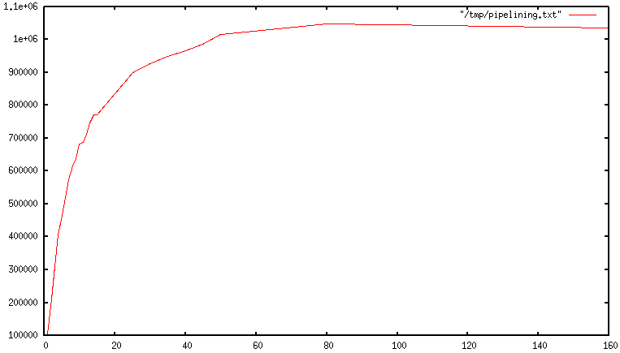

Redis pipelining
Redis pipelining is a technique for improving performance by issuing multiple commands at once without waiting for the response to each individual command. Pipelining is supported by most Redis clients. This document describes the problem that pipelining is designed to solve and how pipelining works in Redis.
Request/Response protocols and round-trip time (RTT)⚓︎
Redis is a TCP server using the client-server model and what is called a Request/Response protocol.
This means that usually a request is accomplished with the following steps:
- The client sends a query to the server, and reads from the socket, usually in a blocking way, for the server response.
- The server processes the command and sends the response back to the client.
So for instance a four commands sequence is something like this:
- Client: INCR X
- Server: 1
- Client: INCR X
- Server: 2
- Client: INCR X
- Server: 3
- Client: INCR X
- Server: 4
Clients and Servers are connected via a network link. Such a link can be very fast (a loopback interface) or very slow (a connection established over the Internet with many hops between the two hosts). Whatever the network latency is, it takes time for the packets to travel from the client to the server, and back from the server to the client to carry the reply.
This time is called RTT (Round Trip Time). It's easy to see how this can affect performance when a client needs to perform many requests in a row (for instance adding many elements to the same list, or populating a database with many keys). For instance if the RTT time is 250 milliseconds (in the case of a very slow link over the Internet), even if the server is able to process 100k requests per second, we'll be able to process at max four requests per second.
If the interface used is a loopback interface, the RTT is much shorter, typically sub-millisecond, but even this will add up to a lot if you need to perform many writes in a row.
Fortunately there is a way to improve this use case.
Redis Pipelining⚓︎
A Request/Response server can be implemented so that it is able to process new requests even if the client hasn't already read the old responses. This way it is possible to send multiple commands to the server without waiting for the replies at all, and finally read the replies in a single step.
This is called pipelining, and is a technique widely in use for many decades. For instance many POP3 protocol implementations already support this feature, dramatically speeding up the process of downloading new emails from the server.
Redis has supported pipelining since its early days, so whatever version you are running, you can use pipelining with Redis. This is an example using the raw netcat utility:
$ (printf "PING\r\nPING\r\nPING\r\n"; sleep 1) | nc localhost 6379
+PONG
+PONG
+PONG
This time we don't pay the cost of RTT for every call, but just once for the three commands.
To be explicit, with pipelining the order of operations of our very first example will be the following:
- Client: INCR X
- Client: INCR X
- Client: INCR X
- Client: INCR X
- Server: 1
- Server: 2
- Server: 3
- Server: 4
IMPORTANT NOTE: While the client sends commands using pipelining, the server will be forced to queue the replies, using memory. So if you need to send a lot of commands with pipelining, it is better to send them as batches each containing a reasonable number, for instance 10k commands, read the replies, and then send another 10k commands again, and so forth. The speed will be nearly the same, but the additional memory used will be at most the amount needed to queue the replies for these 10k commands.
It's not just a matter of RTT⚓︎
Pipelining is not just a way to reduce the latency cost associated with the
round trip time, it actually greatly improves the number of operations
you can perform per second in a given Redis server.
This is because without using pipelining, serving each command is very cheap from
the point of view of accessing the data structures and producing the reply,
but it is very costly from the point of view of doing the socket I/O. This
involves calling the read() and write() syscall, that means going from user
land to kernel land.
The context switch is a huge speed penalty.
When pipelining is used, many commands are usually read with a single read()
system call, and multiple replies are delivered with a single write() system
call. Consequently, the number of total queries performed per second
initially increases almost linearly with longer pipelines, and eventually
reaches 10 times the baseline obtained without pipelining, as shown in this figure.

A real world code example⚓︎
In the following benchmark we'll use the Redis Ruby client, supporting pipelining, to test the speed improvement due to pipelining:
require 'rubygems'
require 'redis'
def bench(descr)
start = Time.now
yield
puts "#{descr} #{Time.now - start} seconds"
end
def without_pipelining
r = Redis.new
10_000.times do
r.ping
end
end
def with_pipelining
r = Redis.new
r.pipelined do
10_000.times do
r.ping
end
end
end
bench('without pipelining') do
without_pipelining
end
bench('with pipelining') do
with_pipelining
end
Running the above simple script yields the following figures on my Mac OS X system, running over the loopback interface, where pipelining will provide the smallest improvement as the RTT is already pretty low:
without pipelining 1.185238 seconds
with pipelining 0.250783 seconds
Pipelining vs Scripting⚓︎
Using Redis scripting, available since Redis 2.6, a number of use cases for pipelining can be addressed more efficiently using scripts that perform a lot of the work needed at the server side. A big advantage of scripting is that it is able to both read and write data with minimal latency, making operations like read, compute, write very fast (pipelining can't help in this scenario since the client needs the reply of the read command before it can call the write command).
Sometimes the application may also want to send EVAL or EVALSHA commands in a pipeline.
This is entirely possible and Redis explicitly supports it with the SCRIPT LOAD command (it guarantees that EVALSHA can be called without the risk of failing).
Appendix: Why are busy loops slow even on the loopback interface?⚓︎
Even with all the background covered in this page, you may still wonder why a Redis benchmark like the following (in pseudo code), is slow even when executed in the loopback interface, when the server and the client are running in the same physical machine:
FOR-ONE-SECOND:
Redis.SET("foo","bar")
END
After all, if both the Redis process and the benchmark are running in the same box, isn't it just copying messages in memory from one place to another without any actual latency or networking involved?
The reason is that processes in a system are not always running, actually it is the kernel scheduler that lets the process run. So, for instance, when the benchmark is allowed to run, it reads the reply from the Redis server (related to the last command executed), and writes a new command. The command is now in the loopback interface buffer, but in order to be read by the server, the kernel should schedule the server process (currently blocked in a system call) to run, and so forth. So in practical terms the loopback interface still involves network-like latency, because of how the kernel scheduler works.
Basically a busy loop benchmark is the silliest thing that can be done when metering performances on a networked server. The wise thing is just avoiding benchmarking in this way.
创建日期: November 25, 2023